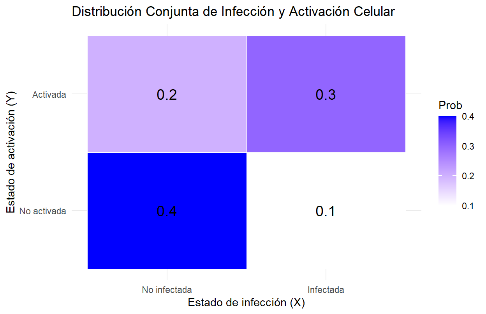
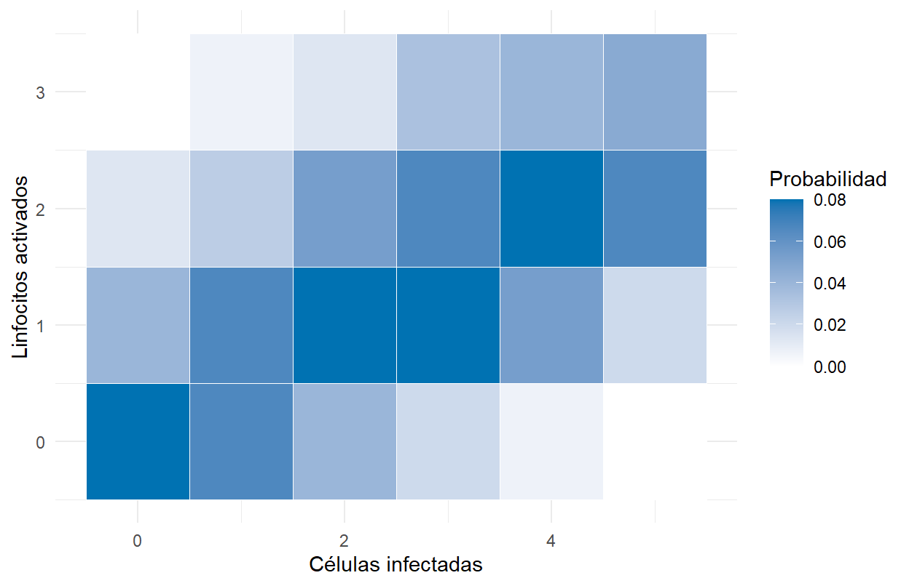
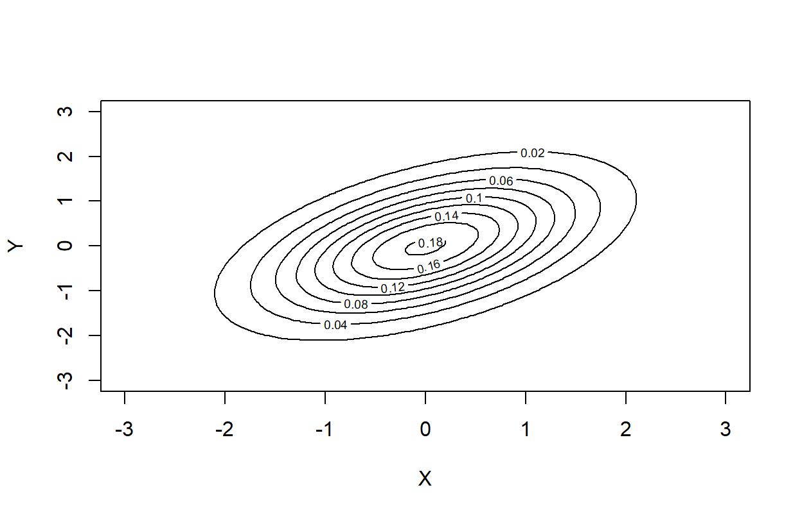

Capítulo 4 Distribuciones de probabilidad multidimensionales
En este capítulo se extiende el concepto de variable aleatoria a un conjunto de variables que pueden interpretarse asociadas a un conjunto de medidas distintas y que pueden estar, o no relacionadas.
Tras introducir los conceptos de distribuciones multidimensionales, condicionales y marginales, se pasa a considerar el caso más habitual en inferencia estadística en el que las componentes de los vectores son independientes entre ellas.
Este es, de hecho, el punto de partida de muchos modelos y métodos en estadística.
4.1 Distribuciones conjuntas de probabilidades
-
A menudo nos interesa estudiar múltiples características de un fenómeno aleatorio:
- La altura, el peso y el sexo de un individuo.
- La expresión coordinada de los genes que participan en una determinada via metabólica.
- El número de nucleótidos A, C, G, T en una región del genoma de tamaño \(n\).
Estas características numéricas que, de forma análoga al caso univariante, podemos suponer asociadas a los resultados de experimentos aleatorios se denominan variables aleatorias multidimensionales o, atendiendo a sus componentes, vectores aleatorios.
Las distribuciones de probabilidad que, siguiendo con la analogía, asociaremos a los vectores aleatorios se denominan distribuciones de probabilidades conjuntas o multivariantes.
Antes de desarrollar el tema es importante remarcar que consideraremos dos escenarios:
El primero, el “natural” es considerar que si trabajamos con distintas variables asociadas a un mismo fenómeno, es razonable suponer que varien de alguna forma coordinada. De ahí la expresión distribución conjunta.
En ocasiones, sin embargo, dispondremos de vectores aleatorios que varian independientemente los unos de los otros. En este caso su distribución conjunta será de un tipo especial que se conoce independencia.
4.1.1 Variable aleatoria bivariante
Empezaremos por el caso más sencillo que, sin embargo permite estudiar la mayoría de los conceptos que nos interesan: Las distribuciones conjuntas de dos variables aleatorias.
Una variable aleatoria bivariante es una aplicación que, a cada resultado de un experimento, le asocia dos números:
\[ (X, Y): \Omega \to \mathbb{R}^2 \]
\[ w \mapsto (X(w), Y(w)) \]
De modo que, para todo par de valores numéricos, \((x, y) \in \mathbb{R}^2\), se tiene
\[ \{w \in \Omega \mid X(w) \leq x,\quad Y(w) \leq y\} \in \mathcal{A} \] donde \(\mathcal{A}\) representa el conjunto de sucesos observables definido en el capítulo 1.
Lo que viene a significar esta definición es que una variable aleatoria bidimensional es un conjunto de medidas (números reales) a los que, por el hecho de poderse asociar con sucesos observables a traves de los intérvalos \(X(w) \leq x,\quad Y(w) \leq y\) se les puede asociar (calcular) una probabilidad.
Fijémonos también que, como en el caso univariante, la función que transporta la probabilidad, del espació de probabilidad al conjunto de los reales, será la función de distribución, que se define a continuación.
4.1.2 Función de distribución bivariante
La función de distribución conjunta de \(X\) y \(Y\), \(F\), es una generalización inmediata del caso univariado y se define como:
\[ F(x, y) = P\{w \in \Omega \mid X(w) \leq x, Y(w) \leq y\} = P[X \leq x, Y \leq y] \]
Como en el caso univariante, esta es la función que define la forma en que podemos calcular probabilidades sobre los valores de las variables, en este caso de dimensión 2.
Ejemplo 4.1.1. Distribución conjunta del estado de infección y activación de células
Supongamos que estamos observando dos características de células en un experimento de inmunología. Las variables que describen las células son:
- \(X\): La célula está infectada (\(X = 1\)) o no infectada (\(X = 0\)).
- \(Y\): La célula está activada (\(Y = 1\)) o no activada (\(Y = 0\)).
La siguiente tabla muestra la probabilidad conjunta de observar cada combinación de infección y activación en una célula:
| \(X \backslash Y\) | \(Y = 0\) (No activada) | \(Y = 1\) (Activada) |
|---|---|---|
| \(X = 0\) (No infectada) | 0.4 | 0.2 |
| \(X = 1\) (Infectada) | 0.1 | 0.3 |
4.1.2.1 1. Función de distribución conjunta
La función de distribución conjunta \(F(x, y)\) para esta situación se calcula como:
\[ F(x, y) = P(X \leq x, Y \leq y) \]
Los valores para los pares posibles de \(x\) y \(y\) son:
- \(F(0, 0) = P(X = 0, Y = 0) = 0.4\)
- \(F(0, 1) = P(X = 0, Y \leq 1) = P(X = 0, Y = 0) + P(X = 0, Y = 1) = 0.4 + 0.2 = 0.6\)
- \(F(1, 0) = P(X \leq 1, Y = 0) = P(X = 0, Y = 0) + P(X = 1, Y = 0) = 0.4 + 0.1 = 0.5\)
- \(F(1, 1) = P(X \leq 1, Y \leq 1) = 1\)
4.1.2.2 2. Cálculo de la probabilidad de eventos específicos
Por ejemplo, la probabilidad de que una célula esté infectada pero no activada es:
\[ P(X = 1, Y = 0) = 0.1 \]
Comprobación y representación con R
Podemos visualizar esta distribución conjunta con un gráfico en R.
library(ggplot2)
# Crear los datos de la distribución conjunta
data <- expand.grid(X = c(0, 1), Y = c(0, 1))
data$Prob <- c(0.4, 0.1, 0.2, 0.3)
# Crear el gráfico
p <- ggplot(data, aes(x = factor(X, labels = c("No infectada", "Infectada")),
y = factor(Y, labels = c("No activada", "Activada")))) +
geom_tile(aes(fill = Prob), color = "white") +
scale_fill_gradient(low = "white", high = "blue") +
geom_text(aes(label = round(Prob, 2)), size = 5) +
labs(x = "Estado de infección (X)", y = "Estado de activación (Y)",
title = "Distribución Conjunta de Infección y Activación Celular") +
theme_minimal()
p
Figure 4.1: Probabilidades conjuntas de infección y activación.
4.2 Variables aleatorias bivariantes discretas
Una vez introducidos los conceptos de forma general pasamos a estudiar el problema en el caso discreto, que es muy intuitivo y, a la vez permite introducir todos los conceptos relevantes.
Un vector aleatorio discreto, \((X, Y)\) es aquel cuyo recorrido o conjunto de valores posibles es finito o numerable.
En este caso, toda probabilidad
\[ P\{(X, Y) \in B\}, \quad \text{donde } B \text{ es un conjunto de posibles valores de } X, Y, \]
se puede calcular a partir de la función de masa de probabilidad discreta bivariante.
4.2.1 Función de masa de probabilidad discreta (fmp)
La funcion de masa de probabilidad de los vectores aleatorios generaliza la función del mismo nombre en el caso univariante, es decir, es una función:
\[ f: \mathbb{R}^2 \to [0, 1] \]
Que asigna la probabilidad a cada punto del plano: para todo \((x, y) \in \mathbb{R}^{2}\):
\[ f(x, y) = P\{w \in \Omega \mid X(w) = x, Y(w) = y\} = P[X = x, Y = y] \]
4.2.2 Propiedades de la fmp bivariante
- La masa total de probabilidad sobre el plano es 1:
\[ \sum_{(x_i, y_j) \in \mathbb{R}^{2}} f(x_i, y_j) = 1 \]
- Para un conjunto de valores posibles \(B\), su probabilidad se obtiene sumando las masas de sus puntos:
\[ P((X,Y)\in B)=\sum_{(x_i,y_j)\in B}f(x_i,y_j). \]
En particular, la función de distribución es:
\[ F(x, y) = P[X \leq x, Y \leq y] = \sum_{x_i \leq x, y_j \leq y} f(x_i, y_j) \]
Es decir, como en el caso univariante la función de distribución se puede calcular a partir de la función de masa de probabilidad.
4.2.2.1 Intuición frente a construcción
La presentación de los conceptos anteriores suele generar cierto desasosiego entre los estudiantes que afrontan estos conceptos por primera (o siguientes) vez.
El motivo de este desasosiego es que el papel de la función de distribución no suele ser tan intuitivo como el de la función de masa de probabilidad.
Es decir, es más intuitivo pensar en como calcular la probabilidad que la variable tome un valor concreto (\(P[X=x]\)) , que la probabilidad de que no alcance cierto valor (\(P[X\leq x]\)).
La función de distribución caracteriza cualquier distribución conjunta. En el caso discreto, la función de masa también determina completamente las probabilidades; la CDF ofrece una descripción común al caso discreto y al continuo.
4.2.3 Ejemplo de distribución bivariante discreta
Ejemplo 4.2.1.
Supongamos que un estudio mide el número de células infectadas y el número de linfocitos activados en un campo microscópico. Dado el tamaño del campo y el grado de infección los valores observados de cada variables son:
- \(X\): Número de células infectadas (\(X \in \{0, 1, 2, 3, 4, 5\}\)).
- \(Y\): Número de linfocitos activados (\(Y \in \{0, 1, 2, 3\}\)).
La distribución conjunta se refleja en la siguiente tabla de probabilidades conjuntas:
| \(X\) / \(Y\) | 0 | 1 | 2 | 3 |
|---|---|---|---|---|
| 0 | 12/150 | 6/150 | 2/150 | 0 |
| 1 | 10/150 | 10/150 | 4/150 | 1/150 |
| 2 | 6/150 | 12/150 | 8/150 | 2/150 |
| 3 | 3/150 | 12/150 | 10/150 | 5/150 |
| 4 | 1/150 | 8/150 | 12/150 | 6/150 |
| 5 | 0 | 3/150 | 10/150 | 7/150 |
Esta tabla ilustrativa se construye a partir de 150 observaciones hipotéticas: cada entrada es un recuento dividido por 150. La suma de las probabilidades es 1. Podemos calcular probabilidades de sucesos como los siguientes.
Probabilidad de que hayan dos células infectadas y un linfocito:
Para calcular la probabilidad de que haya exactamente 2 células infectadas y 1 linfocito activado, se puede usar el valor directamente de la tabla.
\[ P(X = 2, Y = 1) = 12/150 = 0.08 \]
Probabilidad de que hayan menos de tres celulas infectadas y menos de dos linfocitos:
Esta probabilidad es la suma de todas las combinaciones de \(X\) y \(Y\) que cumplen con la condición de \(X < 3\) y \(Y < 2\). Es decir, sumamos las probabilidades de los casos
\((X = 0, Y = 0)\), \((X = 0, Y = 1)\), \((X = 1, Y = 0)\), \((X = 1, Y = 1)\), \((X = 2, Y = 0)\), y \((X = 2, Y = 1)\).
\[ P(X<3,Y<2)=\sum_{x=0}^{2}\sum_{y=0}^{1}P(X=x,Y=y) \]
\[ P(X < 3, Y < 2) = (12 + 6 + 10 + 10 + 6 + 12)/150 = 56/150 \approx 0.3733 \]
Recordemos que, al tratarse de variables discretas, no es lo mismo \(P[X < x]\) que \(P[X \leq x]\), por lo que si la pregunta fuera “Probabilidad de que hayan al menos tres celulas infectadas y al menos dos linfocitos” deberíamos calcular:
\[ P(X \geq 3, Y \geq 2) \] Esta probabilidad se obtiene sumando las entradas con \(X\geq3\) e \(Y\geq2\); no es \(F(3,2)\), que corresponde a \(X\leq3\) e \(Y\leq2\).
4.2.3.1 Código R para el cálculo de la pmf
Podemos hacer los cálculos usando R:
prob_table <- matrix(c(12, 6, 2, 0,
10, 10, 4, 1,
6, 12, 8, 2,
3, 12, 10, 5,
1, 8, 12, 6,
0, 3, 10, 7), nrow = 6, byrow = TRUE) / 150
stopifnot(abs(sum(prob_table) - 1) < 1e-12)
# Asignar nombres a las filas y columnas
rownames(prob_table) <- 0:5
colnames(prob_table) <- 0:3
# Mostrar la tabla
prob_table## 0 1 2 3
## 0 0.080000000 0.04000000 0.01333333 0.000000000
## 1 0.066666667 0.06666667 0.02666667 0.006666667
## 2 0.040000000 0.08000000 0.05333333 0.013333333
## 3 0.020000000 0.08000000 0.06666667 0.033333333
## 4 0.006666667 0.05333333 0.08000000 0.040000000
## 5 0.000000000 0.02000000 0.06666667 0.046666667
# Calcular la probabilidad de (X = 2, Y = 1)
prob_X2_Y1 <- prob_table["2", "1"]
cat("P(X = 2, Y = 1) =", prob_X2_Y1, "\n")## P(X = 2, Y = 1) = 0.08
# Calcular la probabilidad de (X < 3, Y < 2)
prob_X_lt_3_Y_lt_2 <- sum(prob_table[1:3, 1:2])
cat("P(X < 3, Y < 2) =", prob_X_lt_3_Y_lt_2, "\n")## P(X < 3, Y < 2) = 0.37333334.2.3.2 Código R para visualizar la distribución conjunta
Para visualizar la distribución conjunta, podemos usar el código siguiente;
u4_grid <- expand.grid(X = 0:5, Y = 0:3)
u4_grid$prob <- as.vector(prob_table)
ggplot(u4_grid, aes(X, Y, fill = prob)) +
geom_tile(color = "white") +
scale_fill_gradient(low = "white", high = "#0072B2") +
labs(x = "Células infectadas", y = "Linfocitos activados", fill = "Probabilidad") +
theme_minimal()
Figure 4.2: Masa conjunta de los recuentos de células y linfocitos; la masa total es uno.
4.3 La distribución multinomial
Antes de seguir con el estudio de las distribuciones discretas presentamos un caso importante de distribucion multivariante discreta, la distribución multinomial.
4.3.1 Generación de las observaciones
Supongamos un experimento aleatorio que puede producir \(k\) resultados mutuamente excluyentes y exhaustivos \(A_1, A_2, \dots, A_k\) con probabilidades \(p_1, p_2, \dots, p_k\), tales que \(p_1 + p_2 + \dots + p_k = 1\).
Repetimos el experimento \(n\) veces de forma independiente, manteniendo las mismas probabilidades en cada ensayo, y llamamos \(X_1, X_2, \dots, X_k\) al número de veces que se presenta \(A_1, A_2, \dots, A_k\).
La distribución conjunta de \(X_1, X_2, \dots, X_k\) recibe el nombre de multinomial.
4.3.2 Funcion de masa de probabilidad de la distribución multinomial
El vector \(\mathbf{X} = (X_1, \dots, X_k)\) tiene distribución multinomial de parámetros \(n\) y \(\mathbf{p} = (p_1, \dots, p_k),\) denotado por \(\mathbf{X} \sim \mathrm{M}(n, \mathbf{p})\), con \(n\) entero positivo, \(p_i \geq 0\) y \(\sum_{i=1}^{k} p_i = 1\).
Su función de masa de probabilidad conjunta es:
\[ f(\mathbf{x}) = P[\mathbf{X} = \mathbf{x}] = \frac{n!}{x_1!x_2!\cdots x_k!} p_1^{x_1} p_2^{x_2} \dots p_k^{x_k} \]
donde \(x_i\) son enteros no negativos tales que \(\sum_{i=1}^{k} x_i = n\); fuera de este soporte la masa es cero. Si \(p_i=0\) y \(x_i=0\), se interpreta \(p_i^{x_i}=1\).
4.3.3 Relación con la distribución binomial
Esta distribución puede verse como una generalización de la distribución binomial en el que, en lugar de tener dos posibles resultados, tenemos \(k\) categorías. Para \(k=2\), \(X_1\sim\operatorname{Bin}(n,p_1)\) y \(X_2=n-X_1\). En general, cada marginal es \(X_i\sim\operatorname{Bin}(n,p_i)\): en cada ensayo basta distinguir la categoría \(i\) de todas las demás.
4.3.4 Un caso particular: La distribución trinomial
Veamos un ejemplo propio del análisis de secuencias en el que se aplica esta distribución:
Si consideramos el alineamiento de dos secuencias \(x, y\) de tamaño \(n\), podemos observar:
- \(A_1\): \(x_i\) alineado con \(y_i\), con \(P(A_1) = p_1\)
- \(A_2\): \(x_i\) alineado con “-”, con \(P(A_2) = p_2\)
- \(A_3\): “-” alineado con \(y_i\), con \(P(A_3) = 1 - p_1 - p_2\)
La variable \((X_1, X_2)\), que cuenta el número de veces que se observa \(A_1, A_2\) (con \(X_3 = n - X_1 - X_2\)), sigue una distribución trinomial de parámetros \(n\), \(p_1\), \(p_2\).
El total está fijado: \(X_1+X_2+X_3=n\). Podemos describir el vector mediante dos componentes libres, pero estas no son variables independientes. El número de probabilidades libres es \(k-1=2\), además del parámetro \(n\). El ejemplo de alineamientos supone un número fijo de posiciones clasificadas de forma independiente y con probabilidades constantes; es un modelo simplificado.
Ejemplo 4.3.1. Dos estudios y tres laboratorios
Cada uno de dos estudios se asigna, independientemente, a A, B o C con probabilidad \(1/3\). Si \(X_i\) cuenta los estudios asignados a cada laboratorio, \[ P(X_A=1,X_B=1,X_C=0)=\frac{2!}{1!1!0!}(1/3)^2=2/9. \] La marginal \(X_A\) es \(\operatorname{Bin}(2,1/3)\), con masas \(4/9,4/9,1/9\) para \(0,1,2\). Los ejercicios 1, 3 y 6 desarrollan este mismo modelo.
## [1] 0.2222222
dbinom(0:2, size = 2, prob = 1/3)## [1] 0.4444444 0.4444444 0.1111111Ejemplo 4.3.2.
Estudiamos los posibles alineamientos de dos secuencias de 5 nucleótidos, en un contexto en el que las probabilidades de \(A_1\) y \(A_2\) son, respectivamente 0.6 y 0.2, es decir una Trinomial M(5; 0.6, 0.2) que dan lugar a la tabla siguiente.
| \(X_1\) / \(X_2\) | 0 | 1 | 2 | 3 | 4 | 5 |
|---|---|---|---|---|---|---|
| 0 | (0,0,5) | (0,1,4) | (0,2,3) | (0,3,2) | (0,4,1) | (0,5,0) |
| 1 | (1,0,4) | (1,1,3) | (1,2,2) | (1,3,1) | (1,4,0) | |
| 2 | (2,0,3) | (2,1,2) | (2,2,1) | (2,3,0) | ||
| 3 | (3,0,2) | (3,1,1) | (3,2,0) | |||
| 4 | (4,0,1) | (4,1,0) | ||||
| 5 | (5,0,0) |
A partir de la tabla anterior podemos determinar las probabilidades conjuntas. Se muestran redondeadas a cuatro decimales; los cálculos posteriores utilizan los valores sin redondear:
| \(X_1\) / \(X_2\) | 0 | 1 | 2 | 3 | 4 | 5 |
|---|---|---|---|---|---|---|
| 0 | 0.0003 | 0.0016 | 0.0032 | 0.0032 | 0.0016 | 0.0003 |
| 1 | 0.0048 | 0.0192 | 0.0288 | 0.0192 | 0.0048 | |
| 2 | 0.0288 | 0.0864 | 0.0864 | 0.0288 | ||
| 3 | 0.0864 | 0.1728 | 0.0864 | |||
| 4 | 0.1296 | 0.1296 | ||||
| 5 | 0.0778 |
4.4 Distribuciones marginales
Dado un vector aleatorio, puede interesar el comportamiento individual de una o cada una de sus componentes \(X_i\).
La distribución de la componente \(i\)-ésima se denomina distribución marginal de \(X_i\).
Representa el comportamiento de \(X_i\) sin tener en cuenta las otras componentes, es decir, como si fuera una variable aleatoria unidimensional.
4.4.1 Las marginales están en los márgenes
El nombre procede de escribir las sumas de filas y columnas en los márgenes de una tabla conjunta. Con \(X_1\) en las filas y \(X_2\) en las columnas, la suma de cada fila es una masa marginal de \(X_1\), y la de cada columna, de \(X_2\). La fila o columna cero no es una marginal.
4.4.2 Funciones de masa marginales
- La masa marginal de \(X\) es:
\[ f_X(x) = f_1(x) = \sum_j f(x, y_j) \]
y la de \(Y\) es:
\[ f_Y(y) = f_2(y) = \sum_i f(x_i, y) \]
4.4.3 Trinomial M(5; 0.6, 0.2): Distribuciones marginales
Ejemplo 4.4.1.
Las sumas de las filas y columnas de la tabla conjunta anterior dan las siguientes marginales binomiales (valores redondeados):
| \(x\) | \(P(X_1=x)\), \(\operatorname{Bin}(5,0.6)\) | \(P(X_2=x)\), \(\operatorname{Bin}(5,0.2)\) |
|---|---|---|
| 0 | 0.01024 | 0.32768 |
| 1 | 0.07680 | 0.40960 |
| 2 | 0.23040 | 0.20480 |
| 3 | 0.34560 | 0.05120 |
| 4 | 0.25920 | 0.00640 |
| 5 | 0.07776 | 0.00032 |
| Total | 1 | 1 |
4.5 Distribuciones condicionales
A veces nos interesa la distribución de una componente si conocemos que la otra ha tomado un valor determinado.
En el ejemplo de los alineamientos, podríamos querer conocer los posibles valores y probabilidades de un alineamiento, si sabemos que hay exactamente un “gap” en la secuencia de prueba.
4.5.1 Función de masa condicional
¿Qué podemos decir de la distribución de \(Y\) si conocemos el valor de \(X\)?
\[ f(y \mid X = x) = P[Y = y \mid X = x] = \frac{P[X = x, Y = y]}{P[X = x]} = \frac{f(x, y)}{f_X(x)} \]
siempre que \(f_X(x) > 0\).
4.5.2 Trinomial M(5; 0.6, 0.2): Distribución condicional
Ejemplo 4.5.1.
Distribución de \(X_1\) condicionada a que \(X_2=1\): quedan cuatro posiciones y la probabilidad de la categoría 1 entre las restantes es \(0.6/(1-0.2)=0.75\). Por tanto, \(X_1\mid X_2=1\sim\operatorname{Bin}(4,0.75)\).
| \((X_1, 1)\) | \(P(X_1, 1)\) | \(P_{X_2}(1)\) | \(P(X_1 \mid X_2 = 1)\) |
|---|---|---|---|
| (0,1,4) | 0.0016 | 0.4096 | 0.00390625 |
| (1,1,3) | 0.0192 | 0.4096 | 0.04687500 |
| (2,1,2) | 0.0864 | 0.4096 | 0.21093750 |
| (3,1,1) | 0.1728 | 0.4096 | 0.42187500 |
| (4,1,0) | 0.1296 | 0.4096 | 0.31640625 |
| Total | 1 |
4.6 Vectores aleatorios absolutamente continuos
- Diremos que \((X, Y)\) es absolutamente continua si existe una función \(f(x, y)\), llamada función de densidad conjunta absolutamente continua o bivariada, tal que, para todo \((x, y) \in \mathbb{R}^2\),
\[ F(x, y) = \int_{-\infty}^{x} \int_{-\infty}^{y} f(u, v)\, dv \, du \]
- La densidad es única salvo cambios en conjuntos de área cero (casi por todas partes).
4.6.1 Propiedades de la función de densidad conjunta
\(f(x, y) \geq 0\)
La masa total de probabilidad es 1:
\[ \int_{-\infty}^{\infty} \int_{-\infty}^{\infty} f(x, y)\, dx\,dy = 1 \]
- Para cualquier conjunto \(S\):
\[ P\{(X, Y) \in S\} = \int_S f(x, y) \, dx \, dy \]
En particular, la probabilidad de que \((X, Y)\) esté en un rectángulo:
\[ P(a_1 < X \leq a_2, b_1 < Y \leq b_2) = \int_{a_1}^{a_2} \int_{b_1}^{b_2} f(x, y) \, dy \, dx \]
4.6.2 Densidades marginales en el caso continuo
- Las densidades marginales son:
\[ f_X(x) = \int_{-\infty}^{\infty} f(x, y) \, dy \]
\[ f_Y(y) = \int_{-\infty}^{\infty} f(x, y) \, dx \]
4.6.3 Densidad condicional en el caso continuo
- La densidad de \(Y\) condicionada a un valor de \(X\) es:
\[ f(y \mid X = x) = \frac{f(x, y)}{f_X(x)} \]
siempre que \(f_X(x) > 0\).
En el caso continuo \(P(X=x)=0\): la densidad condicional se define mediante este cociente de densidades, no dividiendo probabilidades de sucesos puntuales.
Ejemplo 4.6.1. Densidad sobre un triángulo
Sea \(f(x,y)=2\) si \(0<y<x<1\), y cero fuera. Su integral es \(\int_0^1\int_0^x2\,dy\,dx=1\). Para \(0<x<1\), \(f_X(x)=2x\), de modo que \(f_{Y\mid X}(y\mid x)=1/x\) si \(0<y<x\). En particular, \(Y\mid X=1/2\) es uniforme en \((0,1/2)\) y \(P(Y<1/4\mid X=1/2)=1/2\).
integrate(function(x) 2*x, 0, 1)$value## [1] 1## [1] 0.54.6.4 La distribución normal bivariante
El ejemplo más importante de una distribución de probabilidad absolutamente continua para vectores aleatorios es la distribución normal bivariante. Esta distribución describe dos variables aleatorias continuas, \(X\) y \(Y\), cuya relación está modelada por una correlación lineal y tiene forma de campana (gaussiana) en dos dimensiones.
4.6.4.1 Función de Densidad Conjunta
La función de densidad conjunta de la distribución normal bivariante con medias \(\mu_X\), \(\mu_Y\), desviaciones estándar \(\sigma_X\), \(\sigma_Y\) y coeficiente de correlación \(\rho\) es:
Escribiendo \(z_X=(x-\mu_X)/\sigma_X\) y \(z_Y=(y-\mu_Y)/\sigma_Y\),
\[ f(x,y)=\frac{1}{2\pi\sigma_X\sigma_Y\sqrt{1-\rho^2}} \exp\left[-\frac{z_X^2-2\rho z_Xz_Y+z_Y^2}{2(1-\rho^2)}\right]. \]
La fórmula requiere \(\sigma_X>0\), \(\sigma_Y>0\) y \(|\rho|<1\). Los casos \(|\rho|=1\) son degenerados y no tienen esta densidad sobre el plano. Esta expresión se generaliza fácilmente de la distribución normal univariante, pero en este caso incluye términos adicionales que representan la interacción entre \(X\) y \(Y\).
Ejemplo 4.6.2.
La siguiente representación reproduce una normal bivariante estándar con correlación \(0.5\).
u4_dnorm2 <- function(x, y, rho = 0.5) {
exp(-(x^2 - 2*rho*x*y + y^2)/(2*(1-rho^2))) /
(2*pi*sqrt(1-rho^2))
}
u4_axis <- seq(-3, 3, length.out = 101)
contour(u4_axis, u4_axis, outer(u4_axis, u4_axis, u4_dnorm2),
xlab = "X", ylab = "Y")
Figure 4.3: Contornos de una densidad normal bivariante estándar con correlación 0.5.
# Comprobación de la marginal en X = 1
u4_marginal <- integrate(function(y) u4_dnorm2(1, y), -Inf, Inf)$value
c(integral = u4_marginal, normal = dnorm(1))## integral normal
## 0.2419707 0.24197074.6.4.2 Distribuciones Marginales
Para obtener las distribuciones marginales a partir de una normal bivariante, debemos integrar la densidad conjunta sobre una de las variables. Utilizamos la densidad conjunta de la sección anterior.
Para obtener la marginal de \(X\), debemos integrar sobre \(Y\):
\[ f_X(x) = \int_{-\infty}^{\infty} f_{X,Y}(x, y) \, dy \]
Al realizar esta integral, se obtiene que la distribución marginal de \(X\) es:
\[ f_X(x) = \frac{1}{\sqrt{2 \pi \sigma_X^2}} \exp\left( -\frac{(x - \mu_X)^2}{2 \sigma_X^2} \right) \]
Esto muestra que \(X\) sigue una distribución normal con media \(\mu_X\) y varianza \(\sigma_X^2\), es decir, \(X \sim N(\mu_X, \sigma_X^2)\).
Del mismo modo, para la marginal de \(Y\), integramos sobre \(X\):
\[ f_Y(y) = \int_{-\infty}^{\infty} f_{X,Y}(x, y) \, dx \]
La solución de esta integral da:
\[ f_Y(y) = \frac{1}{\sqrt{2 \pi \sigma_Y^2}} \exp\left( -\frac{(y - \mu_Y)^2}{2 \sigma_Y^2} \right) \]
Lo que significa que \(Y\) sigue una distribución normal con media \(\mu_Y\) y varianza \(\sigma_Y^2\), es decir, \(Y \sim N(\mu_Y, \sigma_Y^2)\).
Ejemplo 4.6.3.
Supongamos que tenemos una distribución normal bivariante con los siguientes parámetros:
- \(\mu_X = 100\), \(\sigma_X = 15\)
- \(\mu_Y = 50\), \(\sigma_Y = 10\)
- \(\rho = 0.5\)
Aplicamos la densidad anterior con estos parámetros. Integrando sobre \(Y\), obtenemos la distribución marginal de \(X\):
\[ f_X(x) = \frac{1}{\sqrt{2 \pi (15^2)}} \exp\left( -\frac{(x - 100)^2}{2 \cdot 15^2} \right) \]
De manera análoga, la marginal de \(Y\) es:
\[ f_Y(y) = \frac{1}{\sqrt{2 \pi (10^2)}} \exp\left( -\frac{(y - 50)^2}{2 \cdot 10^2} \right) \]
4.6.5 Distribuciones Condicionales
La distribución condicional de una variable dado un valor específico de la otra también es normal univariante. Por ejemplo, la distribución condicional de \(X\) dado \(Y = y\) es:
\[ X \mid Y = y \sim N \left( \mu_X + \rho \frac{\sigma_X}{\sigma_Y} (y - \mu_Y), (1 - \rho^2)\sigma_X^2 \right) \]
De forma análoga, la distribución condicional de \(Y\) dado \(X = x\) es:
\[ Y \mid X = x \sim N \left( \mu_Y + \rho \frac{\sigma_Y}{\sigma_X} (x - \mu_X), (1 - \rho^2)\sigma_Y^2 \right) \]
Ejemplo 4.6.4.
Con los parámetros del ejemplo anterior, medimos dos indicadores en unidades arbitrarias: \(\mu_X=100\), \(\mu_Y=50\), \(\sigma_X=15\), \(\sigma_Y=10\) y \(\rho=0.5\). Calculemos \(X\mid Y=60\).
# Valores originales
mu <- c(100, 50)
sigma <- c(15, 10)
rho <- 0.5
# Condicionar X dado Y = 60
y_cond <- 60
mu_cond <- mu[1] + rho * (sigma[1]/sigma[2]) * (y_cond - mu[2])
sigma_cond <- sqrt(1 - rho^2) * sigma[1]
# Mostrar la media y desviación estándar condicionales
mu_cond## [1] 107.5
sigma_cond## [1] 12.99038La media condicional es 107.5 y la desviación típica es aproximadamente 12.9904. Así, \(X\mid Y=60\sim N(107.5,168.75)\), usando \(N(\mu,\sigma^2)\). La varianza condicional es menor que la marginal porque \(\rho\ne0\).
4.7 Independencia de variables aleatorias
Una vez introducido el concepto de distribución conjunta pasamos a estudiar un caso particularmente importante de distribución conjunta, la independencia. La independencia significa que conocer una componente no cambia la distribución de la otra; ambas siguen teniendo una distribución conjunta.
De manera intuitiva podemos decir que dos variables aleatorias son independientes si los valores que toma una de ellas no afectan a los de la otra ni a sus probabilidades.
En muchas ocasiones la independencia será evidente a partir del experimento, por ejemplo, es independiente el resultado del lanzamiento de un dado y el de una moneda tres veces. Por tanto las variables:
- \(X_1\): “Puntuación obtenida con el dado” y
- \(X_2\): “Número de caras obtenidas al lanzar tres veces una moneda” serán variables independientes.
En otras ocasiones tenemos una dependencia clara, por ejemplo, al lanzar un dado consideremos las variables
- \(Y_1=\): puntuación del dado,
- \(Y_2=\): variable indicadora de puntuación par.
Es evidente que existe una clara dependencia, si sabemos que \(Y_2=1\), la variable \(Y_1\) sólo puede tomar los valores 2, 4 o 6; si sabemos que \(Y_1=3\), entonces \(Y_2=0\) forzosamente.
Algunas veces podemos suponer la existencia de una cierta relación entre variables, aunque sea en forma algo abstracta y sin concretar. Por ejemplo si realizamos unas mediciones sobre unos individuos, las variables altura en cm y peso en Kg probablemente estarán relacionadas, los valores de una influirán en los valores de la otra. Intentar determinar la naturaleza exacta de la relación entre ambas es lo que en estadística conocemos como un problema de asociación (o de correlación lineal si nos interesa específicamente la relación lineal) o de regresión (si queremos modelizar una variable en función de la otra).
Si queremos una definición algo más formal, basta con que recordemos que dos sucesos son independientes si la probabilidad de la intersección es igual al producto de probabilidades, aplicando esta definición a sucesos del tipo \(X \leq a\) tenemos la definición siguiente:
4.7.1 Primera caracterización de la independencia
Diremos que dos variables aleatorias \(X\) e \(Y\) son independientes si y sólo si su función de distribución conjunta puede expresarse como el producto de las funciones de distribución marginales, es decir si
\[ F_{X,Y}(x,y)=F_X(x)F_Y(y)\qquad\text{para todo }(x,y)\in\mathbb R^2. \]
Fijémonos que, como en otros casos, la función que nos permite caracterizar una condición de forma general es la función de distribución.
4.7.1.1 Variables discretas independientes
En el caso de las variables discretas la caracterización de la independencia puede hacerse, además, por las funciones de masa de probabilidad:
Diremos que dos variables aleatorias discretas \(X\) e \(Y\) son independientes si y sólo si su función de masa de probabilidad conjunta puede expresarse como el producto de las funciones de masa de probabilidad marginales, es decir si
\[ f_{X,Y}(x,y)=f_X(x)f_Y(y)\qquad\text{para todo }(x,y)\in\mathbb R^2. \]
4.7.2 Variables absolutamente continuas independientes
Si existe una densidad conjunta, \(X\) e \(Y\) son independientes si y solo si \[ f_{X,Y}(x,y)=f_X(x)f_Y(y) \] casi por todas partes. La igualdad debe comprobarse en todo el plano salvo conjuntos de área cero, incluyendo dónde las densidades son cero; no basta comprobarla en un punto.
4.7.3 Propiedades de las variables independientes
Como consecuencia inmediata de la independencia de \(X\) e \(Y\), se cumple lo siguiente:
\[ P((a<X \leq c) \cap (b<Y \leq d))=P(a<X \leq c) \cdot P(b<Y \leq d) \] Que podría re-enunciarse diciendo que la probabilidad conjunta en un rectangulo definido por los valores “a, c, b, d” es el producto de las probabilidades marginales en los segmentos “ac”, para \(X\) y “bd” para \(Y\).
4.8 Momentos de vectores aleatorios
Una vez hemos introducido los vectores aleatorios, que como hemos señalado, son variables aleatorias bi, tri o \(n\)-dimensionales tiene sentido preguntarse como se extienden a dichos vectores los conceptos y propiedades que introdujimos para variables aleatorias unidimensionales.
Ya hemos visto como, para las funciones de probabilidad, la función de densidad o la función de distribución, existen extensiones inmediatas, la función de densidad conjunta o la función de distribución conjunta.
Hemos visto también que, además de dichas extensiones, aparecen nuevos conceptos, que sólo tienen sentido en dos o más dimensiones, como las funciones de densidad condicionales o funciones de densidad marginales.
Al considerar conceptos como la media o la varianza veremos que sucede algo similar:
- Por un lado conceptos como el de esperanza se extiende inmediatamente al vector de medias.
- Por otro, conceptos como la varianza, han de tener en cuenta ahora, la posibilidad de variación conjunta entre dos o más variables lo que lleva a introducir magnitudes como la covarianza y la correlación.
- La extensión del concepto de varianza pasa ahora a combinar extensiones y conceptos nuevos en lo que se conoce como matriz de varianzas-covarianzas.
4.8.1 Esperanza de un vector aleatorio o vector de medias
Si todas las componentes son integrables, la esperanza matemática de un vector aleatorio es el vector de sus esperanzas matemáticas.
Si tenemos un vector aleatorio bivariante \(\mathbf{X}=(X_1,X_2)\), su esperanza \(\mathbb{E}(\mathbf{X})\) está dada por:
\[ \mathbb{E}(\mathbf{X})= \begin{pmatrix} \mathbb{E}(X_1)\\ \mathbb{E}(X_2) \end{pmatrix} \]
Ejemplo 4.8.1.
Consideremos un experimento en el que estamos midiendo el nivel de expresión génica de dos genes \(X_1\) y \(X_2\) en una muestra de células. Si los niveles promedio de expresión son \(\mu_1=5\) y \(\mu_2=8\), entonces la esperanza del vector aleatorio sería:
\[ \mathbb{E}(\mathbf{X})= \begin{pmatrix} 5\\ 8 \end{pmatrix} \]
4.8.2 Covarianza entre dos variables aleatorias
La covarianza entre dos variables aleatorias \(X_1\) y \(X_2\) es una medida del grado de dependencia lineal entre ellas.
Si \(X_1\) y \(X_2\) tienen segundos momentos finitos, la covarianza se define como
\[ \begin{aligned} \operatorname{Cov}(X_1,X_2) &=\mathbb{E}[(X_1-\mathbb{E}(X_1))(X_2-\mathbb{E}(X_2))]\\ &=\mathbb{E}(X_1X_2)-\mathbb{E}(X_1)\mathbb{E}(X_2). \end{aligned} \]
Ejemplo 4.8.2.
Supongamos que estamos midiendo la cantidad de dos metabolitos \(X_1\) y \(X_2\) en una muestra, y queremos saber si sus concentraciones tienden a aumentar o disminuir juntas. Si obtenemos una covarianza de 0.5, y conocemos la escala en que varían los datos, el signo positivo indica asociación lineal positiva; su intensidad no puede juzgarse a partir de 0.5 sin tener en cuenta las escalas y varianzas.
4.8.3 Covarianza y correlación
La magnitud de la covarianza depende de las unidades: multiplicar una variable por una constante multiplica también su covarianza. Para interpretar la intensidad de la asociación lineal necesitamos una medida estandarizada.
Para evitar esta arbitrariedad se introduce la correlación lineal.
La correlación entre dos variables aleatorias es una medida estandarizada del grado de dependencia lineal entre dos variables (es decir de la covarianza), que toma valores entre -1 y 1. Requiere varianzas finitas y estrictamente positivas y se define como:
\[ \text{Corr}(X_1,X_2)=\frac{\text{Cov}(X_1,X_2)}{\sqrt{\text{Var}(X_1)\text{Var}(X_2)}} \]
Ejemplo 4.8.3.
En el caso de los metabolitos mencionados anteriormente, si \(\text{Cov}(X_1,X_2)=0.5\), \(\text{Var}(X_1)=2\) y \(\text{Var}(X_2)=3\), podemos calcular la correlación, que valdría:
\[ \text{Corr}(X_1,X_2)=\frac{0.5}{\sqrt{2\times 3}}=\frac{0.5}{\sqrt{6}}\approx 0.204 \]
Esto indica una correlación positiva débil entre las concentraciones de los dos metabolitos.
Obsérvese, sin embargo que si en vez de los valores anteriores para las varianzas de \(X\) e \(Y\) hubiéramos tenido \(\text{Var}(X_1)=1\) y \(\text{Var}(X_2)=.5\) el valor de la correlación habría sido:
\[ \text{Corr}(X_1,X_2)=\frac{0.5}{\sqrt{1\times 0.5}}=\frac{0.5}{\sqrt{0.5}}\approx 0.7071 \] Este ejemplo muestra como la correlación aporta más información sobre la dependencia lineal, puesto que, además de tener en cuenta la variación conjunta, tiene en cuenta la variabilidad individual de cada componente.
4.8.4 Matriz de varianzas-covarianzas
La matriz de varianzas-covarianzas de un vector aleatorio \(\mathbf{X}=(X_1,X_2)\) es una matriz que contiene las varianzas de las componentes en la diagonal y las covarianzas fuera de la diagonal. Está definida como:
\[ \text{Cov}(\mathbf{X})= \begin{pmatrix} \text{Var}(X_1)&\text{Cov}(X_1,X_2)\\ \text{Cov}(X_2,X_1)&\text{Var}(X_2) \end{pmatrix} \]
Ejemplo 4.8.4.
Siguiendo con el ejemplo de los metabolitos, si \(\text{Var}(X_1)=2\), \(\text{Var}(X_2)=3\), y la covarianza es \(0.5\), la matriz de covarianzas sería:
\[ \text{Cov}(\mathbf{X})= \begin{pmatrix} 2&0.5\\ 0.5&3 \end{pmatrix} \]
Esto nos indica la dispersión de cada variable y la relación entre ambas.
En la normal bivariante anterior, \(\operatorname{Cov}(X,Y)=\rho\sigma_X\sigma_Y\); esta identidad conecta sus parámetros con la matriz de covarianzas.
4.8.5 Matriz de correlaciones
La matriz de correlaciones de un vector aleatorio bivariante \(\mathbf{X}=(X_1,X_2)\) es una matriz simétrica \(2\times 2\) que contiene los coeficientes de correlación entre las componentes \(X_1\) y \(X_2\). La correlación mide la relación lineal entre las variables y se define como:
\[ \text{Corr}(X_1,X_2)=\frac{\text{Cov}(X_1,X_2)}{\sqrt{\text{Var}(X_1)\text{Var}(X_2)}} \]
La matriz de correlaciones \(\text{Corr}(\mathbf{X})\) está dada por:
\[ \text{Corr}(\mathbf{X})= \begin{pmatrix} 1 & \text{Corr}(X_1,X_2)\\ \text{Corr}(X_2,X_1) & 1 \end{pmatrix} \]
Dado que \(\text{Corr}(X_1,X_2)=\text{Corr}(X_2,X_1)\), la matriz es simétrica, y los elementos diagonales son siempre \(1\) porque la correlación de una variable consigo misma es \(1\).
4.8.5.1 Relación con la matriz de covarianzas
La matriz de correlaciones está relacionada con la matriz de covarianzas de la forma siguiente:
Si \(\Sigma\) es la matriz de covarianzas de \(\mathbf{X}=(X_1,X_2)\), con \(\Sigma=\begin{pmatrix} \text{Var}(X_1) & \text{Cov}(X_1,X_2)\\ \text{Cov}(X_2,X_1) & \text{Var}(X_2) \end{pmatrix}\), la matriz de correlaciones se obtiene “normalizando” cada covarianza dividiendo por el producto de las desviaciones estándar de las respectivas variables:
\[ \text{Corr}(\mathbf{X})= \begin{pmatrix} 1 & \frac{\text{Cov}(X_1,X_2)}{\sigma_1\sigma_2}\\ \frac{\text{Cov}(X_2,X_1)}{\sigma_1\sigma_2} & 1 \end{pmatrix} \]
donde \(\sigma_1=\sqrt{\text{Var}(X_1)}\) y \(\sigma_2=\sqrt{\text{Var}(X_2)}\).
Ejemplo 4.8.5.
Supongamos que medimos dos variables, como la altura \(X_1\) y el peso \(X_2\) de un grupo de personas. Sabemos que:
- \(\text{Var}(X_1)=25\) (varianza de la altura),
- \(\text{Var}(X_2)=100\) (varianza del peso),
- \(\text{Cov}(X_1,X_2)=40\) (covarianza entre altura y peso).
La matriz de covarianzas sería:
\[ \Sigma= \begin{pmatrix} 25 & 40\\ 40 & 100 \end{pmatrix} \]
La correlación entre \(X_1\) y \(X_2\) se calcula como:
\[ \text{Corr}(X_1,X_2)=\frac{40}{\sqrt{25 \times 100}}=\frac{40}{50}=0.8 \]
Por lo tanto, la matriz de correlaciones será:
\[ \text{Corr}(\mathbf{X})= \begin{pmatrix} 1 & 0.8\\ 0.8 & 1 \end{pmatrix} \]
Esto indica una fuerte correlación positiva entre la altura y el peso de las personas en este grupo. La matriz de correlaciones nos proporciona una forma normalizada de comparar la dependencia entre las variables, sin depender de las unidades de medida.
4.8.6 Independencia y producto de esperanzas
Si \(X_1\) y \(X_2\) son independientes e integrables, entonces \[ \mathbb{E}(X_1X_2)=\mathbb{E}(X_1)\mathbb{E}(X_2). \] La recíproca es falsa. En particular, con segundos momentos finitos, la independencia implica covarianza cero, pero covarianza cero no caracteriza la independencia.
4.8.7 Momentos de combinaciones lineales
Para variables integrables y constantes reales \(a_i,b\), la linealidad no exige independencia: \[ \mathbb{E}\left(b+\sum_{i=1}^k a_iX_i\right)=b+\sum_{i=1}^k a_i\mathbb{E}(X_i). \] Si además existen segundos momentos finitos, \[ \begin{aligned} \operatorname{Var}\left(b+\sum_{i=1}^k a_iX_i\right) &=\sum_{i=1}^k a_i^2\operatorname{Var}(X_i)\\ &\quad+2\sum_{i<j}a_ia_j\operatorname{Cov}(X_i,X_j). \end{aligned} \] Para dos variables, \(\operatorname{Var}(X-Y)=\operatorname{Var}(X)+\operatorname{Var}(Y)-2\operatorname{Cov}(X,Y)\). Las covarianzas desaparecen si las variables son incorreladas; la independencia es suficiente, pero no necesaria. La fórmula no presupone que la combinación sea normal.
4.8.8 Momentos de la multinomial
Para \(\mathbf X\sim\mathrm M(n,\mathbf p)\), \[ \begin{aligned} \mathbb E(X_i)&=np_i,\\ \operatorname{Var}(X_i)&=np_i(1-p_i),\\ \operatorname{Cov}(X_i,X_j)&=-np_ip_j\quad(i\ne j). \end{aligned} \] Las dos primeras igualdades proceden de las marginales binomiales. Para la tercera, escribimos cada recuento como suma de indicadores por ensayo: dos categorías distintas no ocurren en el mismo ensayo, así que la covarianza de sus indicadores es \(0-p_ip_j\); entre ensayos es cero por independencia. Sumando resulta \(-np_ip_j\).
Ejemplo 4.8.6. Momentos de las asignaciones a laboratorios
Con dos estudios y tres laboratorios equiprobables, \(\mathbb E(X_A)=2/3\), \(\operatorname{Var}(X_A)=4/9\) y \(\operatorname{Cov}(X_A,X_B)=-2/9\). Por tanto, \[ \operatorname{Var}(X_A-X_B)=4/9+4/9-2(-2/9)=4/3. \] El signo negativo refleja que un estudio asignado a A ya no puede asignarse a B.
4.8.9 Relación entre incorrelación e independencia
Cuando la covarianza entre dos variables es cero, se dice que las variables son incorreladas. Aunque la independencia implica que las variables son incorreladas, lo contrario no siempre es verdad: dos variables pueden ser incorreladas (tener covarianza cero) pero no independientes.
Ejemplo 4.8.7.
Un ejemplo clásico es el siguiente: si \(X\sim N(0,1)\) y \(Y=X^2\), entonces \(\operatorname{Cov}(X,Y)=E(X^3)-E(X)E(X^2)=0\). Sin embargo, no son independientes: \(P(Y\leq1\mid |X|\leq1)=1\), mientras que \(P(Y\leq1)<1\).
Ejemplo 4.8.8.
Consideremos dos variables aleatorias \(X_1\) y \(X_2\) que siguen una distribución normal conjunta bivariante con media cero:
\[ (X_1, X_2) \sim \mathcal{N}\left(\mathbf{0}, \Sigma \right) \]
Si la matriz de covarianzas \(\Sigma\) es diagonal, es decir, \(\text{Cov}(X_1, X_2) = 0\), entonces \(X_1\) y \(X_2\) son incorreladas.
En este caso particular, cuando tienen distribución normal conjunta, la incorrelación sí implica independencia, porque en la normal conjunta la ausencia de correlación (covarianza cero) también implica que no hay ninguna dependencia entre las variables.
Sin embargo, en otras distribuciones que no tienen distribución normal conjunta, la incorrelación no garantiza la independencia, lo que subraya la importancia de distinguir entre los dos conceptos.